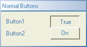

KineticaRT Studio Button

Features
The Button control displays the state of a Boolean (digital) channel and
allows the channel state to be changed.
There are three modes of operation:
-
Normal - stays pressed but can be released
-
Sticky - stays pressed but must be released by something other than the mouse
-
AutoReturn - stays pressed until the mouse button is released
It also has the following features:
-
Display of the channels description or a custom description
-
Display of the channels tooltip or a custom tooltip
-
Button can be labeled with the channels true value text or custom text.
Connection
The KineticaRT Studio Button should be connected to channels containing values
of type KineticaRT.Values.Boolean.